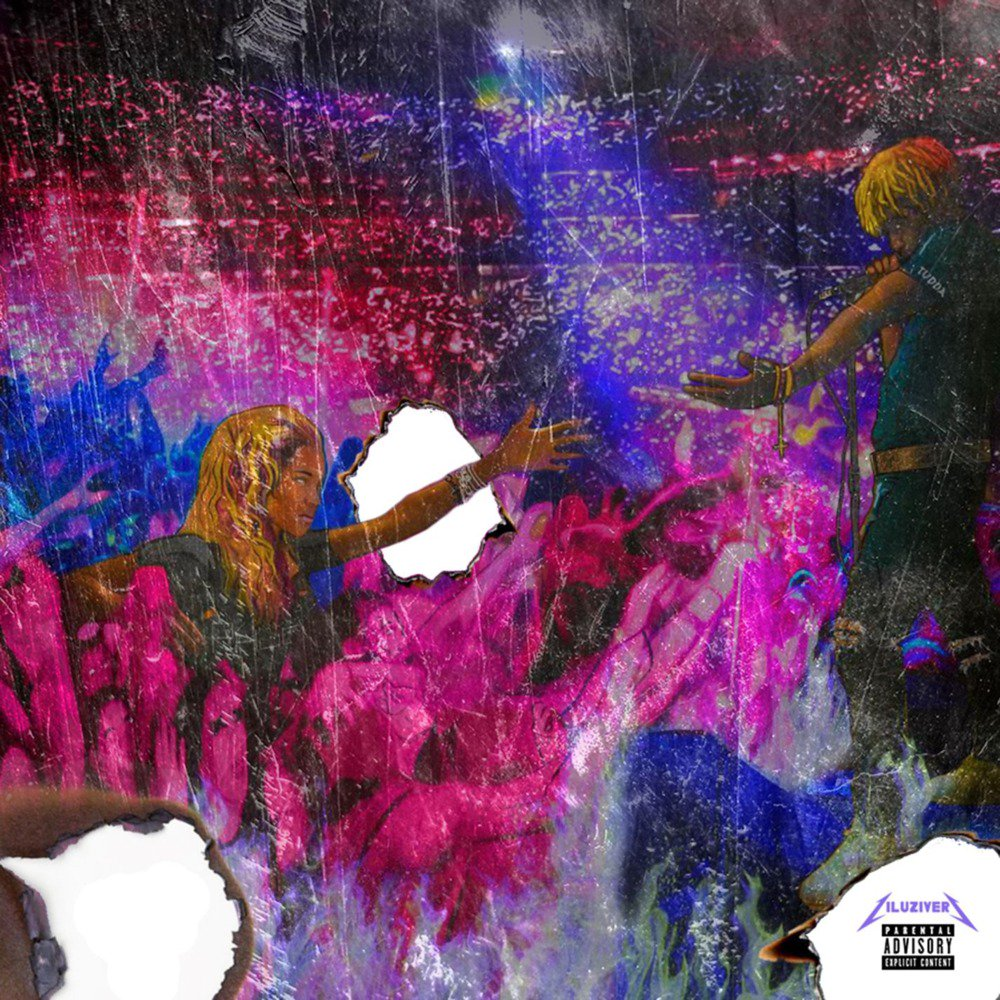
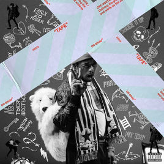

| Contact |
Name |
Email Address |
Phone |
| Info |
Luke Carlyle |
luke.carlyle@maine.edu |
617-510-1652 |
On this page I will go into detail about Lil Uzi Vert and my favorite songs and albums created by him.
My number one all time favorite uzi album is Luv is rage. It has several bangers like
7am
Yamborghini Dream
and
Top

My next favorite is Luv is rage 2. I love almost every song on this album. It has almost no features and its just pure Lil Uzi. It also has my favorte music video XO Tour Llif3.(I will link the video in the bottom.)

Young Thug
Kodak Black
Drake
Migos
Home Page
(XO Tour Llif3)